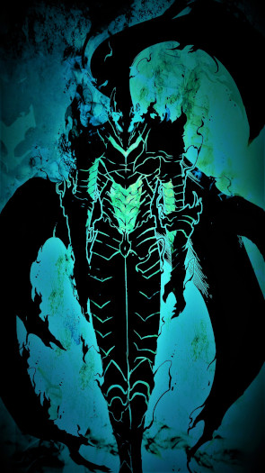

Momonga
Historia
Um humano que tinha uma amada que era uma princesa de um reino destruído por um Dragão Ancião e ela que tinha lutado com ele e ele com pena por aluta ter acabado de uma forma decepcionante dá a ela um corpo imortal e quando ela e o humano estavam junto num lago cristalino o dragão surge do fundo do lago e fala que ele terminaria a luta de tempos atrás mais durante a luta quando o humano iria tomar um ataque sua amada se joga na frente e cai no chão o dragão ri e diz que esse e um ato tolo q só humanos tem e que teria outra revanche e lança um ataque matando os dois mais o humano depois de muitos e muitos anos vagando entre as dimensões da morte ela consegue voltar para seu mundo de origem só q agora como o Imperador da Morte e então ele vaga para concluir dois objetivos um e matar o dragão e o outro e encontrar os restos ou o corpo da sua amada.
Poder
Imperador da Morte...
Status
- str: 10(-2)
- Int: 12(+3)
- Char: 10
- Con: 10(+1)
- Dex: 10
- Wis: 10(+2)
Magia
- Magia de Terra
- Magia de Fogo
- Magia de Raio
- Magia de Água
- Magia de Ar
- ...
Inventário
- Espada Negra